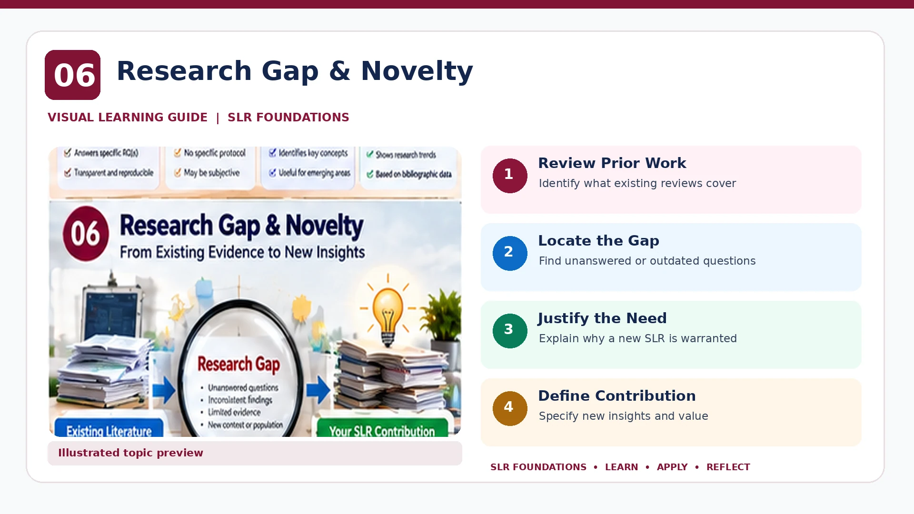

SLR FOUNDATIONS · PRE-HANDS-ON LEARNING
SLR Research Gap & Novelty
Establish why a new review is needed before writing search strings.

Four defensible reasons for a new SLR
Coverage gap
Important populations, settings, techniques or outcomes are not adequately covered by existing reviews.
Time gap
New evidence materially changes the landscape; recency alone is not sufficient.
Methodological gap
Previous reviews lack transparent searching, appraisal or an appropriate synthesis.
Conceptual gap
Existing reviews do not integrate an important theoretical lens or comparison.
Novelty assessment workflow
- Find 3–5 closely related published reviews.
- Compare scope, review questions, search dates, databases and synthesis approaches.
- Identify what evidence remains unaddressed.
- Write one specific, verifiable contribution statement.
- Re-check the claim before manuscript submission.
Weak: “No SLR exists.” Stronger: “Existing reviews focus on X; this review examines Y in Z context and synthesises newly available evidence.” Only use the stronger claim after checking the literature.